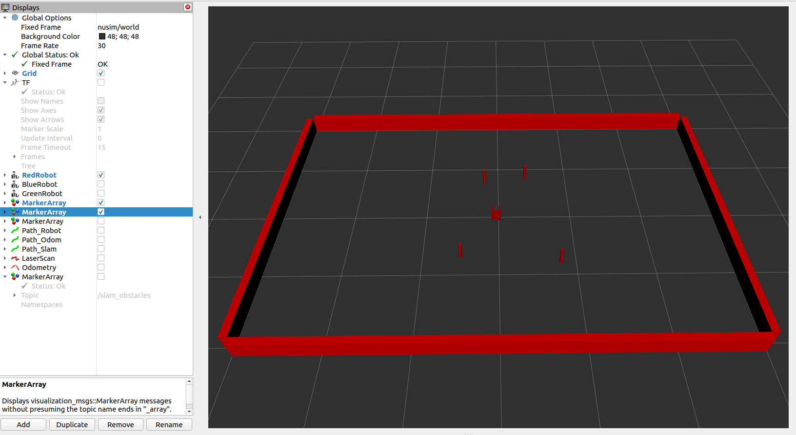
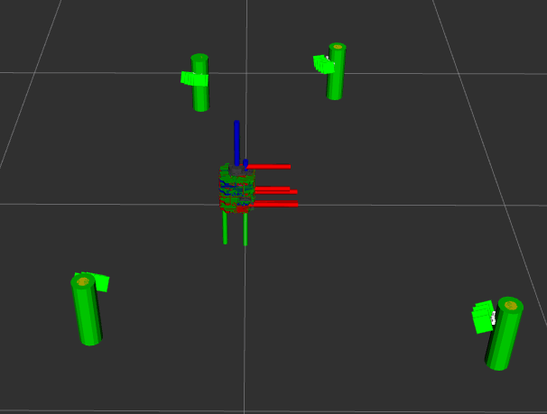

This project consists of several ROS packages
A library for handling transformations in SE(2) and other turtlebot-related math which include:
geometry2d - Handles 2D geometry primitives.
se2d - Handles 2D rigid body transformations.
frame_main - Performs some rigid body computations based on user input.
diff_drive - Includes all functions related to the kinematics of wheeled mobile robots.
URDF files for Nuturtle turtlebot3_burger. Able to display multiple turtlebot3 models in RViz, each appearing with a different color. Also be able to change the physical properties of the robot by editing a YAML file.
Create the basic environment for the robot. Allow the robot to move, according to simulated kinematics, but through the same publisher/subscriber interface that an actual turtlebot uses.
The primary component of this project is the implementation of feature-based extended Kalman filter simultaneous localization and mapping (EKF-SLAM). The EKF-SLAM algorithm consisted of three steps: initialization, prediction, and update. At each timestep, odometry and sensor measurements were used to estimate the state of the robot and landmarks. The prediction step updated the estimate of the full state vector and propagated uncertainty using the linearized state transition model. The update step involved computing the theoretical measurement given the current state estimate, the Kalman gain, the posterior state update, and the posterior covariance.
To detect cylindrical landmarks, the landmarks node reads LIDAR data and divides the data into clusters, and then performs supervised (circular regression) learning on each of the clusters to determine which of the clusters should be counted as landmarks.
